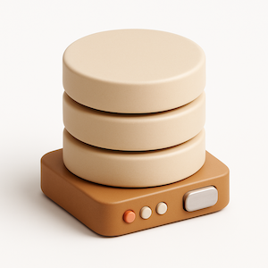

Sync to DB
-
Real-time sync: Keep your Notion workspace up to
date with live Stripe data.
-
Sync historical data: Backfill your Notion
workspace with past data from Stripe.
-
Relational databases: Automatically link related
records—like connecting Customers to their Subscriptions or
Invoices.
-
Free in test and sandbox: Pay with a test card (4242) and your test subscription will be free forever.
14 day free trial followed by $30/month subscription. Cancel anytime.